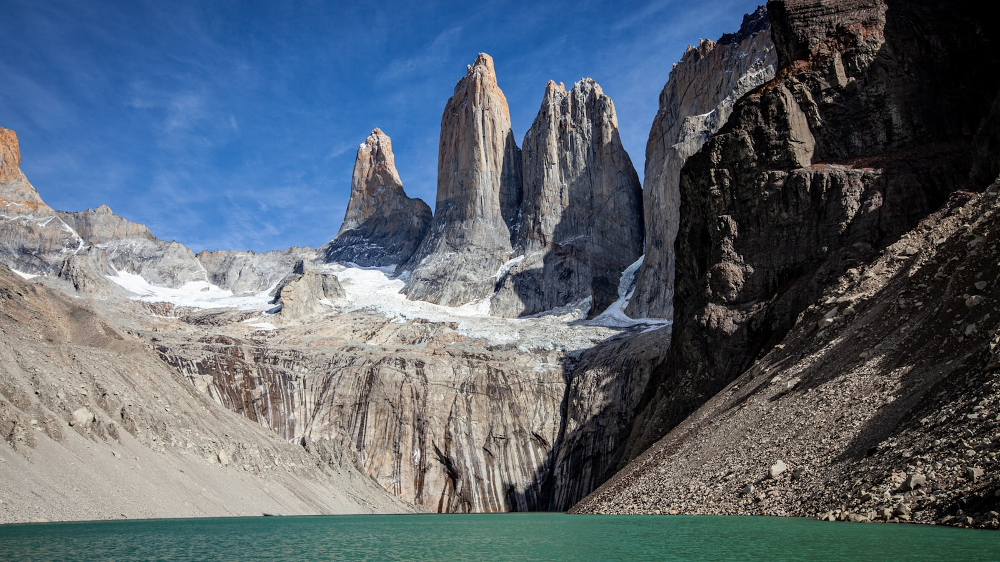
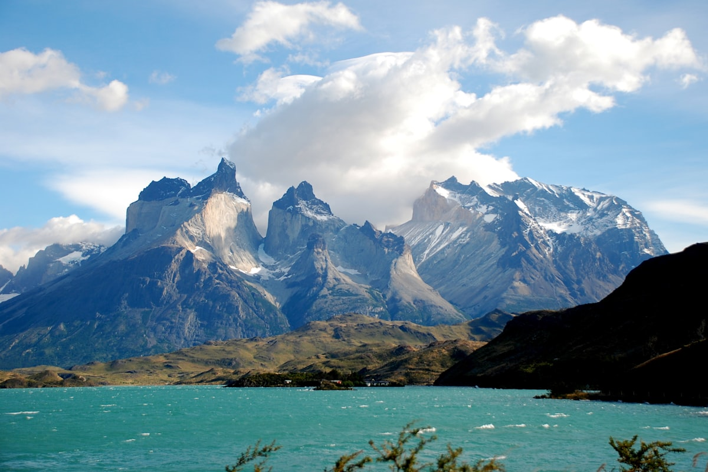

Patagonia : the land of granite spires, glaciers and the end-of-the-world wilderness of Torres del Paine, Fitz Roy and Ushuaia : is not a single country. It is shared between Argentina and Chile, so there is no single "Patagonia visa": you follow each country's national rules and most itineraries cross the border at least once. In 2026 most tourists (US, EU, UK, Canada, Australia, Japan, Brazil and more) enter both countries visa-free for 90 days. This guide covers entry by nationality, the new Argentine health-insurance rule, border crossings, the best time to go, airports and documents.
| Key Facts 2026 | |
|---|---|
| Region | Shared between Argentina (east) and Chile (west) |
| Argentina visa-free | 90 days for 80+ nationalities (US, EU, UK, Canada, Australia, Japan, Brazil, etc.) |
| Chile visa-free | 90 days for most Western & Latin American passports (no reciprocity fee) |
| Health insurance | Argentina requires proof of travel health insurance for the whole stay (since 2025) |
| Passport validity | 6 months beyond your stay recommended (both countries) |
| Border crossings | Cardenal Samoré, Río Don Guillermo, Integración Austral & 40+ others |
| Best time | Austral summer, November-March (peak December-February) |
| Currency | Argentine peso (ARS) & Chilean peso (CLP) |
| Official portals | migraciones.gob.ar (Argentina) · serviciomigraciones.cl (Chile) |
Why Patagonia Visa Rules Cover Two Countries
Patagonia is not a country : it is a vast region of roughly 1 million km² shared between Argentina (eastern Patagonia, including El Calafate, El Chaltén, Bariloche and Ushuaia) and Chile (western Patagonia, including Torres del Paine, Puerto Natales and Punta Arenas). Most multi-day Patagonia itineraries cross the international border at least once, so travellers must satisfy both Argentine and Chilean entry rules. Fortunately, the two countries share similar visa-free policies for most Western and Latin American passport holders.
Argentina Entry Requirements for Patagonia 2026
For the Argentine side of Patagonia (Bariloche, El Calafate, the Perito Moreno glacier, El Chaltén, Ushuaia and Tierra del Fuego), travellers from the United States, the European Union, the United Kingdom, Canada, Australia, New Zealand, Japan, South Korea, Brazil and 70+ other countries enter visa-free for up to 90 days. No eVisa or pre-registration is needed for these passports. Reciprocity fees for US, Canadian and Australian visitors were abolished years ago and are not charged in 2026.
- Travel health insurance is now required: since 2025 Argentina asks all foreign visitors to carry proof of health insurance covering the full stay : buy a policy before you go.
- Passport valid for your stay (6 months recommended)
- Return or onward ticket and proof of accommodation
- Sufficient funds for the trip
- US green-card holders and permanent residents of the EU, UK and Canada are accepted visa-free (no AVE needed); the paid AVE electronic authorization mainly affects nationalities such as Chinese citizens holding a valid US or Schengen visa
For the full visa-free list, see our Argentina Visa Requirements 2026 guide.
Chile Entry Requirements for Patagonia 2026
For the Chilean side (Torres del Paine, Puerto Natales, Punta Arenas, Puerto Montt, the Carretera Austral and Chiloé), the same major Western and Latin American passports enter visa-free for 90 days. Chile abolished its US reciprocity fee years ago and charges no entry tax for short tourist stays in 2026.
- Passport valid for your stay (6 months recommended)
- Tourist Card (Tarjeta de Turismo) issued at the border : keep it; you surrender it on departure, and it can be extended for another 90 days for about USD 100
- Proof of onward travel and an address of stay in Chile
- Strict customs : no fresh fruit, meat, dairy, honey or seeds may be brought in (SAG agricultural inspection)
For full details, see our Chile Visa Guide 2026.
Border Crossings Between Argentine and Chilean Patagonia
The most-used Patagonia border crossings in 2026 are:
- Paso Cardenal Samoré : Bariloche to Osorno (Lake District)
- Paso Río Don Guillermo / Cerro Castillo : El Calafate to Torres del Paine (the most popular trekking route)
- Paso Integración Austral : Río Gallegos to Punta Arenas (Tierra del Fuego access)
- Paso Futaleufú : Esquel to Chaitén (Carretera Austral)
Each crossing means a passport stamp out of one country and into the other. A fresh 90-day permit is granted when you re-enter, but officers may question repeated short hops used to reset the clock. If you cross by rental car you need a notarised border permit and insurance valid for both countries : arrange this with the rental company in advance.

Best Time to Visit Patagonia
Patagonia sits in the southern hemisphere, so the seasons are reversed:
- December-February (peak summer): the warmest, longest days and the best trekking weather : but the busiest and priciest; book refuges and flights months ahead.
- November & March-April (shoulder): fewer crowds, lower prices and beautiful light, with cooler, more changeable weather.
- May-September (winter): short, cold days; many lodges, trails and boat services in deep Patagonia close, though Torres del Paine offers quiet winter tours.
Patagonia is famously windy from spring to autumn : pack layers and a windproof shell whatever the month.
How to Reach Patagonia
There is no single "Patagonia airport"; you fly to a regional hub on either side:
- Argentina: El Calafate (FTE) for the glaciers and Torres del Paine, Ushuaia (USH) for Tierra del Fuego, and Bariloche (BRC) for the Lake District : usually via Buenos Aires (EZE/AEP).
- Chile: Punta Arenas (PUQ) is the gateway to Torres del Paine via Puerto Natales : usually via Santiago (SCL).
Long-distance buses and shared transfers link El Calafate, Puerto Natales and Punta Arenas across the border. Your entry stamp or tourist card is issued at the airport or land border where you arrive.
Documents for Torres del Paine, El Calafate and Ushuaia
- Torres del Paine (Chile) : Chilean tourist card + park entry permit bought online via pasesparques.cl. Refugio and camping reservations are strongly recommended (mandatory in high season).
- El Calafate / Perito Moreno (Argentina) : Argentine tourist stamp + Los Glaciares National Park fee paid at the gate.
- Ushuaia / Tierra del Fuego (Argentina) : standard Argentine tourist stamp; Antarctic cruises departing Ushuaia handle their own documentation.
- Bariloche (Argentina) : standard Argentine tourist stamp; Nahuel Huapi National Park is free to enter.
- Proof of travel health insurance (for the Argentine side) and your Chilean tourist card for the Chilean side
Money, Currency & Costs
Argentina uses the Argentine peso (ARS) and Chile the Chilean peso (CLP) : they are not interchangeable, so carry some of each near the border. Cards are widely accepted in towns like El Calafate, Puerto Natales and Punta Arenas, and paying by card in Argentina now generally gives a fair tourist exchange rate. Carry cash for remote areas, park gates, small refuges and bus tickets, and keep US dollars as a backup. Patagonia is one of South America's pricier regions, especially in peak summer.
Who Needs a Visa for Patagonia in 2026
Citizens of countries not on the Argentine or Chilean visa-free lists (most African, Central Asian and some Middle Eastern nationalities) must apply for a tourist visa before travelling, separately for each country if both will be visited. Apply through the nearest Argentine consulate (or Argentina's AVE electronic authorization, if eligible) and the Chilean consulate. Processing typically takes 2–6 weeks per country, so plan ahead.
Frequently Asked Questions
Do I need a visa to visit Patagonia in 2026?
Patagonia is shared between Argentina and Chile, so there is no single Patagonia visa. Most US, EU, UK, Canadian, Australian, Japanese, South Korean and Brazilian passports enter both countries visa-free for 90 days. Visitors from countries not on the visa-free lists must apply for a tourist visa from each country separately before travelling.
Do I need separate visas or entries for Argentina and Chile?
Argentina and Chile have independent immigration systems. If you are visa-exempt for both, you simply receive an entry stamp (Argentina) or tourist card (Chile) at each border : no advance visa. If your nationality needs a visa, you must apply to each country's consulate separately.
How long can I stay in Patagonia as a tourist?
Both Argentina and Chile grant visa-exempt tourists 90 days per entry. A fresh 90 days is granted when you cross between the two countries, but immigration officers may question repeated short crossings used to extend a stay.
Do I need travel health insurance for Patagonia?
Yes for the Argentine side: since 2025 Argentina asks all foreign visitors to carry proof of health insurance covering their entire stay. Chile does not require it, but given Patagonia's remoteness, comprehensive travel insurance is strongly recommended for the whole trip.
What documents do I need at the Argentina-Chile border?
A passport valid for your stay, the Chilean Tourist Card (issued at the border and surrendered on exit), proof of onward travel and an address of stay. Chile's customs are strict : no fresh fruit, meat, dairy, honey or seeds may be brought in.
When is the best time to visit Patagonia?
The austral summer, November to March (peak December-February), offers the warmest weather and best trekking, but is busiest. May-September is cold and many services close. Expect strong wind from spring to autumn.
Which airports serve Patagonia?
On the Argentine side: El Calafate (FTE), Ushuaia (USH) and Bariloche (BRC), usually via Buenos Aires. On the Chilean side: Punta Arenas (PUQ), the gateway to Torres del Paine via Puerto Natales, usually via Santiago.
Is there an entry fee, and what about national-park fees?
There is no general entry fee for either country. National-park fees are separate: Torres del Paine (Chile) is paid online before arrival via pasesparques.cl, while Los Glaciares (Argentina) is paid at the gate.